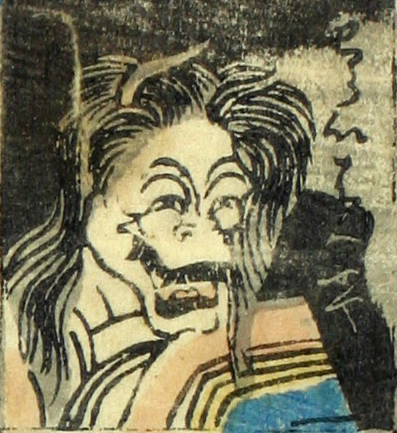

般若；ハンニャ，女；オンナ

笑い般若。頭に2本の角が生えている。横に裂けた口を大きく開いて笑い、その口からは鋭い歯が覗いてる。
著作者：芳盛／出典：親書誌：U426_nichibunken_0073：しん板化物尽し；シンパンバケモノヅクシ／日付：2006／資源識別子：U426_nichibunken_0073_0011_0000
Copyright (c)2010- International Research Center for Japanese Studies, Kyoto, Japan. All rights reserved.